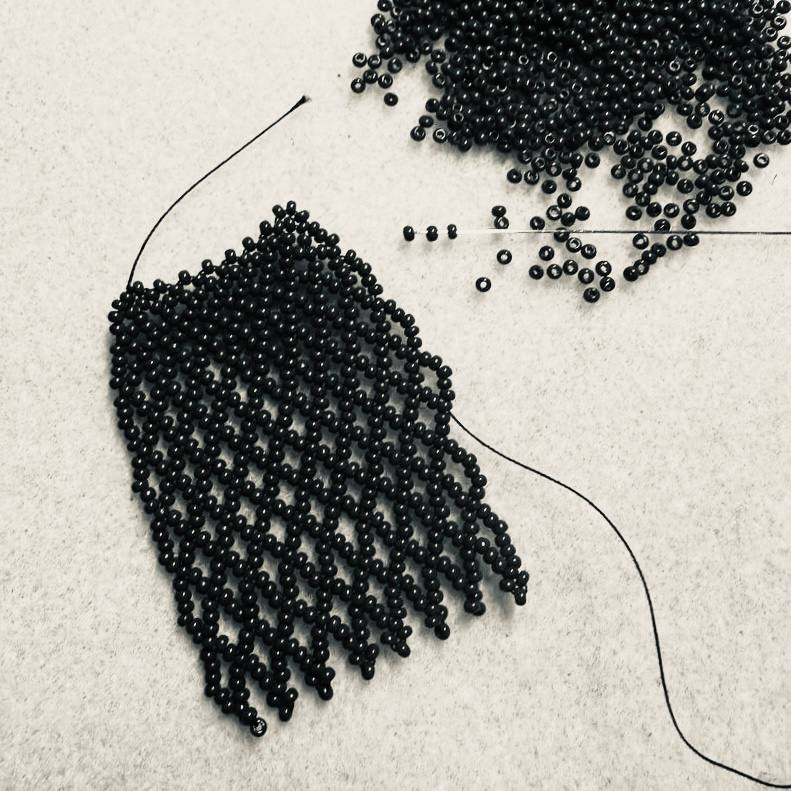
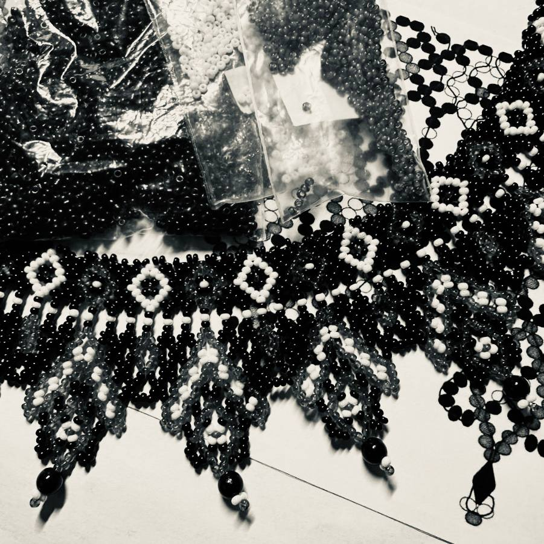
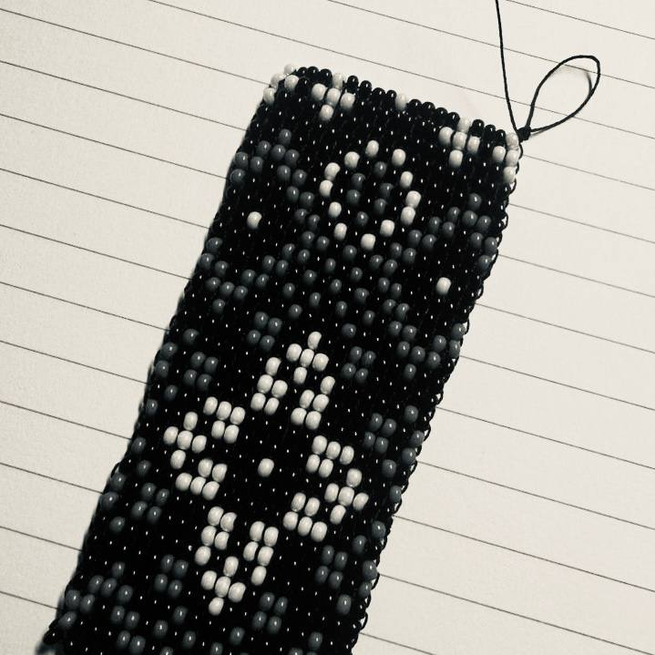

Our Story

Oberih — meaning "protective charm" in Ukrainian — brings centuries-old ornamental patterns into modern wear. Each piece of jewelry is handcrafted using traditional bead-weaving techniques, honoring cultural heritage while creating bold, contemporary accessories.
This is jewelry for those who wear their story, who value craft over mass production, and who see accessories as meaningful personal expression.

The Maker
Sofia Pankiv is a digital artist and designer with a strong interest in combining digital creativity and traditional craft. Her work spans web design, poster design, and brand development, alongside hands-on artistic practices.
Alongside her digital projects, Sofia creates traditional Ukrainian bead jewelry, including sylianky, nyzanky, chokers, and kryzy. Each piece is carefully handcrafted with beads, drawing inspiration from Ukrainian cultural heritage while exploring contemporary design aesthetics.
Her broader creative interests include music, graphic design, painting, and crocheting. Through these different mediums, she continues to experiment with form, color, and visual storytelling.
Sofia is currently focused on growing her jewelry project and building a recognizable brand around her beadwork. Her pieces have already been sold to international buyers, marking the first steps toward bringing traditional Ukrainian bead jewelry to a wider global audience.
View CollectionHow it is made
Each piece begins as a sketch — translating traditional Ukrainian motifs into a contemporary bead grid pattern.
1 Day
Glass beads are carefully chosen for each piece — colour combinations developed.
1 Day
Using traditional bead-weaving techniques, each bead is threaded and set by hand. Statement collars take 40-60 hours of work.
1-3 Weeks
Each piece is inspected, secured, and packaged by hand — ready to be worn and worn again for years.
1-2 Days
In a world of fast fashion and disposable accessories, OBERIH takes a different path. Each piece is made-to-order with a 2-3 week production timeline, because quality requires time.
This approach means your jewelry is unique. It means owning something with true value, made to last, not destined for a landfill after one season.



Keeping Ukrainian bead-weaving techniques alive by making them economically sustainable and culturally relevant today.
Keeping Ukrainian bead-weaving techniques alive by making them economically sustainable and culturally relevant today.
Bold pieces for people who want to stand out, who see jewelry as personal statement, not subtle background.